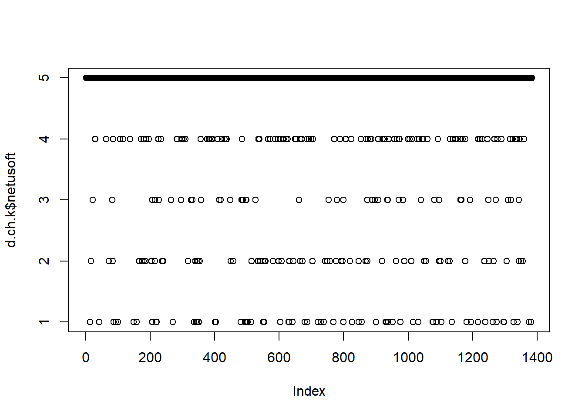
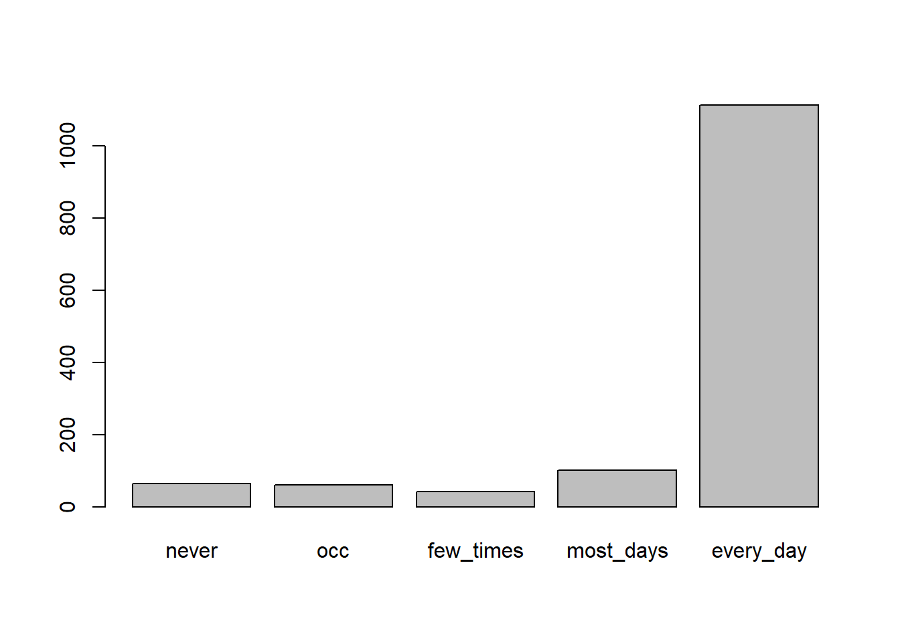
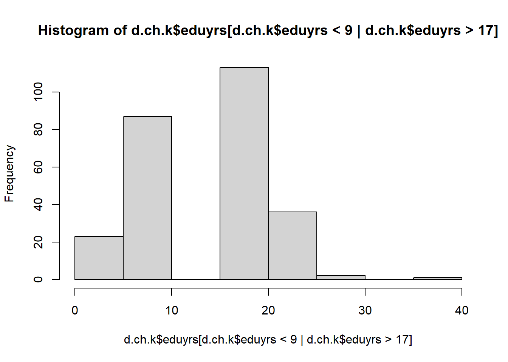
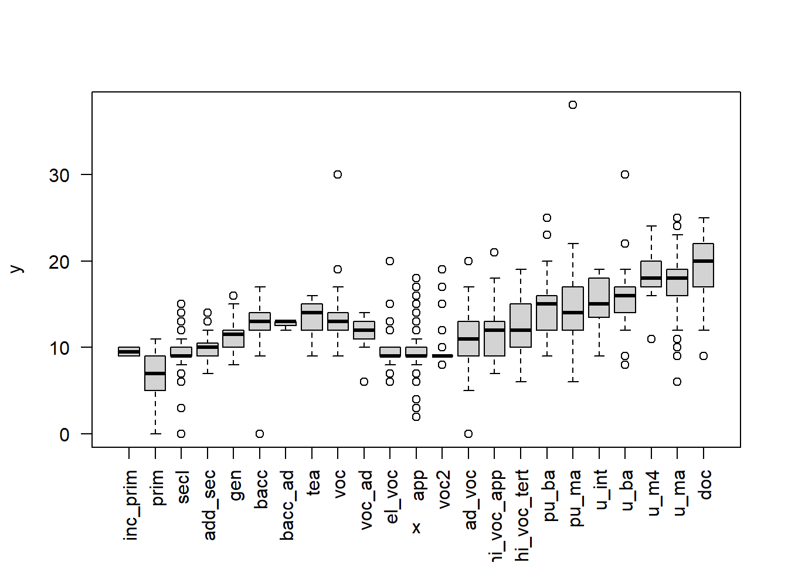

str(d.ch.k$gndr) int [1:1384] 1 1 1 2 2 1 2 2 2 2 ...d.ch.k$f_gndr <- factor(d.ch.k$gndr, levels = c(1, 2), labels = c("m", "w"))Arbeiten mit Datensätzen II: Daten bereinigen
In den vergangenen Wochen haben wir grundlegende Aspekte der Arbeit mit R kennengelernt. Zudem haben Sie letzte Woche den Datensatz eingelesen und erste Bereinigungen und Plausibilisierungen vorgenommen. Dies werden wir in dieser Woche noch vertiefen. Aufbauend auf einer kurzen Einführung zu Faktoren besteht das Ziel für diese Woche des Weiteren darin, dass Sie sich mit Faktoren vertraut machen. Faktoren sind das geeignete Format, um kategoriale – d.h. nominale und ordinale – Daten in R zu speichern und damit zu arbeiten.
Die Lernziele:
Faktoren sind eine wichtige Datenart (factor; wie character oder numeric), die für die Organisation von sozialwissenschaftlichen Variablen relevant ist (Manderscheid 2017, p. 35). Wir können sie insbesondere für Variablen mit nominalem oder ordinalem Skalenniveau verwenden. Wir sehen mit str(d.ch.k), dass manche Variablen numerisch kodiert sind, die ordinal oder kategorial, das heisst in R als Faktoren kodiert sein sollten. Faktoren weisen sowohl eine numerische Ausprägung (“Levels”) als auch ein Label auf. Dadurch ist kombinieren sie eine numerische Kodierung, wodruch zum Beispiel die Ordnung nach Levels immer noch möglich ist, mit einer character-Kodierung, wodurch man eher den Überblick behält. Gleichwohl sind gewisse Funktionen, die auf numerische oder kategoriale Variablen anwendbar sind, für Faktoren nicht möglich.
Die Labels (Name) und zugehörigen Levels (numerische Code) finden wir im Codebook:
gndr
| Levels | Labels |
|---|---|
| 1 | Male |
| 2 | Female |
| 9 | No answer |
netusoft
| Levels | Labels |
|---|---|
| 1 | Never |
| 2 | Only occasionally |
| 3 | A few times a week |
| 4 | Most days |
| 5 | Every day |
| 7 | Refusal |
| 8 | Don’t know |
| 9 | No answer |
Wir definieren “gndr” als Faktor
str(d.ch.k$gndr) int [1:1384] 1 1 1 2 2 1 2 2 2 2 ...d.ch.k$f_gndr <- factor(d.ch.k$gndr, levels = c(1, 2), labels = c("m", "w"))…und betrachten, was sich geändert hat:
# d.ch.k$gndr + 1 # funktioniert jetzt nicht mehr
str(d.ch.k$f_gndr) Factor w/ 2 levels "m","w": 1 1 1 2 2 1 2 2 2 2 ...Mittels Kreuztabellen lässt sich die Umkodierung leicht überprüfen (Vertiefung folgt in Woche 7):
table(d.ch.k$f_gndr, d.ch.k$gndr, useNA = "always")
1 2 <NA>
m 697 0 0
w 0 687 0
<NA> 0 0 0Im Unterschied zu “gndr” ist “netusoft” eine ordinal skalierte Variable. Solche kategorialen Daten können wir als geordnete Faktoren erfassen:
plot(d.ch.k$netusoft) # macht so kein Sinn, weshalb?
Wir wandeln den numerischen Vektor in einen Faktor um:
d.ch.k$f_netusoft <- factor(d.ch.k$netusoft,
levels = 1:5,
labels = c("never", "occ", "few_times",
"most_days", "every_day"),
ordered = T)
table(d.ch.k$f_netusoft, d.ch.k$netusoft, useNA = "always")
1 2 3 4 5 <NA>
never 65 0 0 0 0 0
occ 0 61 0 0 0 0
few_times 0 0 42 0 0 0
most_days 0 0 0 102 0 0
every_day 0 0 0 0 1114 0
<NA> 0 0 0 0 0 0R passt Tabellen und Plots an das Datenformat an:
table(d.ch.k$f_netusoft)
never occ few_times most_days every_day
65 61 42 102 1114 plot(d.ch.k$f_netusoft)
Definieren Sie für alle Variablen die fehlenden Werte gemäss Codebook.
Gehen Sie Ihren reduzierten (d.h. gefilterten und selektierten) Datensatz durch und überlegen Sie, welche Variablen bereits korrekt kodiert sind und welche als geordnete oder ungeordnete Faktoren kodiert sein sollten.
Wandeln Sie Letztere in Faktoren um. Duplizieren Sie die Variablen dafür, etwa gndr zu f_gndr (d.h. überschreiben Sie die Originalvariable nicht). Prüfen Sie Ihre Veränderungen jeweils!
Plausibilisieren Sie eine weitere Variable (sowohl univariat als auch bivariat). Halten Sie Ihr Vorgehen und Begründungen dafür fest. Argumentieren Sie, inwiefern die von Ihnen vorgeschlagene Veränderung am Datensatz gerechtfertigt ist.
Reflexion (bitte betiteln Sie diesen Abschnitt auch mit “Reflexion” in Ihrem Markdown-Dokument!)
Bitte reflektieren Sie und halten stichpunktartig fest:
In den nachfolgenden Chunks wird jeweils eine Variable bearbeitet:
Hinweise: agea und yrbrn siehe Woche 5, gndr keine NA, Umkodierung siehe oben.
Wir gehen jede Variable durch…
d.ch.k$ipbhprpa[d.ch.k$ipbhprpa %in% c(66, 77, 88, 99)] <- NA
table(d.ch.k$ipbhprpa, useNA = "always")
1 2 3 4 5 6 <NA>
189 494 345 145 161 33 17 d.ch.k$f_ipbhprpa <- factor(d.ch.k$ipbhprpa,
levels = 1:6,
labels = c("very_much", "yes", "somewhat", "little",
"not", "not_at_all"),
ordered = T)
table(d.ch.k$ipbhprpa, d.ch.k$f_ipbhprpa, useNA = "always")
very_much yes somewhat little not not_at_all <NA>
1 189 0 0 0 0 0 0
2 0 494 0 0 0 0 0
3 0 0 345 0 0 0 0
4 0 0 0 145 0 0 0
5 0 0 0 0 161 0 0
6 0 0 0 0 0 33 0
<NA> 0 0 0 0 0 0 17d.ch.k$fineqpy[d.ch.k$fineqpy %in% c(7, 8, 9)] <- NA
table(d.ch.k$fineqpy, useNA = "always")
1 2 3 4 5 <NA>
387 471 276 185 40 25 d.ch.k$f_fineqpy <- factor(d.ch.k$fineqpy,
levels = 1:5,
labels = c("strongly_in_favour", "somewhat_in_favour",
"neither_nor", "somewhat_in_against", "strongly_in_against"),
ordered = T)
table(d.ch.k$fineqpy, d.ch.k$f_fineqpy, useNA = "always")
strongly_in_favour somewhat_in_favour neither_nor somewhat_in_against
1 387 0 0 0
2 0 471 0 0
3 0 0 276 0
4 0 0 0 185
5 0 0 0 0
<NA> 0 0 0 0
strongly_in_against <NA>
1 0 0
2 0 0
3 0 0
4 0 0
5 40 0
<NA> 0 25d.ch.k$edlvdch[d.ch.k$edlvdch %in% c(5555, 7777, 8888, 9999)] <- NA
table(d.ch.k$edlvdch, useNA = "always")
1 2 3 4 5 6 7 8 9 10 11 12 13 14 15 16
2 22 134 23 34 44 3 13 22 9 46 398 52 58 68 42
17 18 19 20 21 22 23 <NA>
113 73 7 48 11 112 45 5 d.ch.k$f_edlvdch <- factor(d.ch.k$edlvdch,
levels = 1:23,
labels = c("inc_prim", "prim", "secI", "add_sec",
"gen", "bacc", "bacc_ad", "tea", "voc",
"voc_ad", "el_voc", "app", "voc2", "ad_voc",
"hi_voc_app", "hi_voc_tert", "pu_ba", "pu_ma",
"u_int", "u_ba", "u_m4", "u_ma", "doc"),
ordered = T)
table(d.ch.k$edlvdch, d.ch.k$f_edlvdch, useNA = "always")
inc_prim prim secI add_sec gen bacc bacc_ad tea voc voc_ad el_voc app
1 2 0 0 0 0 0 0 0 0 0 0 0
2 0 22 0 0 0 0 0 0 0 0 0 0
3 0 0 134 0 0 0 0 0 0 0 0 0
4 0 0 0 23 0 0 0 0 0 0 0 0
5 0 0 0 0 34 0 0 0 0 0 0 0
6 0 0 0 0 0 44 0 0 0 0 0 0
7 0 0 0 0 0 0 3 0 0 0 0 0
8 0 0 0 0 0 0 0 13 0 0 0 0
9 0 0 0 0 0 0 0 0 22 0 0 0
10 0 0 0 0 0 0 0 0 0 9 0 0
11 0 0 0 0 0 0 0 0 0 0 46 0
12 0 0 0 0 0 0 0 0 0 0 0 398
13 0 0 0 0 0 0 0 0 0 0 0 0
14 0 0 0 0 0 0 0 0 0 0 0 0
15 0 0 0 0 0 0 0 0 0 0 0 0
16 0 0 0 0 0 0 0 0 0 0 0 0
17 0 0 0 0 0 0 0 0 0 0 0 0
18 0 0 0 0 0 0 0 0 0 0 0 0
19 0 0 0 0 0 0 0 0 0 0 0 0
20 0 0 0 0 0 0 0 0 0 0 0 0
21 0 0 0 0 0 0 0 0 0 0 0 0
22 0 0 0 0 0 0 0 0 0 0 0 0
23 0 0 0 0 0 0 0 0 0 0 0 0
<NA> 0 0 0 0 0 0 0 0 0 0 0 0
voc2 ad_voc hi_voc_app hi_voc_tert pu_ba pu_ma u_int u_ba u_m4 u_ma doc
1 0 0 0 0 0 0 0 0 0 0 0
2 0 0 0 0 0 0 0 0 0 0 0
3 0 0 0 0 0 0 0 0 0 0 0
4 0 0 0 0 0 0 0 0 0 0 0
5 0 0 0 0 0 0 0 0 0 0 0
6 0 0 0 0 0 0 0 0 0 0 0
7 0 0 0 0 0 0 0 0 0 0 0
8 0 0 0 0 0 0 0 0 0 0 0
9 0 0 0 0 0 0 0 0 0 0 0
10 0 0 0 0 0 0 0 0 0 0 0
11 0 0 0 0 0 0 0 0 0 0 0
12 0 0 0 0 0 0 0 0 0 0 0
13 52 0 0 0 0 0 0 0 0 0 0
14 0 58 0 0 0 0 0 0 0 0 0
15 0 0 68 0 0 0 0 0 0 0 0
16 0 0 0 42 0 0 0 0 0 0 0
17 0 0 0 0 113 0 0 0 0 0 0
18 0 0 0 0 0 73 0 0 0 0 0
19 0 0 0 0 0 0 7 0 0 0 0
20 0 0 0 0 0 0 0 48 0 0 0
21 0 0 0 0 0 0 0 0 11 0 0
22 0 0 0 0 0 0 0 0 0 112 0
23 0 0 0 0 0 0 0 0 0 0 45
<NA> 0 0 0 0 0 0 0 0 0 0 0
<NA>
1 0
2 0
3 0
4 0
5 0
6 0
7 0
8 0
9 0
10 0
11 0
12 0
13 0
14 0
15 0
16 0
17 0
18 0
19 0
20 0
21 0
22 0
23 0
<NA> 5d.ch.k$eduyrs[d.ch.k$eduyrs %in% c(77, 88, 99)] <- NA
table(d.ch.k$eduyrs, useNA = "always")
0 1 2 3 4 5 6 7 8 9 10 11 12 13 14 15
8 1 1 7 2 4 12 16 59 477 115 49 161 87 47 65
16 17 18 19 20 21 22 23 24 25 30 38 <NA>
57 59 48 35 30 7 13 7 6 3 2 1 5 # numerisch ist okd.ch.k$mnactic[d.ch.k$mnactic %in% c(66, 77, 88, 99)] <- NA
table(d.ch.k$mnactic, useNA = "always")
1 2 3 4 5 6 7 8 9 <NA>
812 80 23 7 23 343 1 77 16 2 d.ch.k$f_mnactic <- factor(d.ch.k$mnactic,
levels = 1:9,
labels = c("paid_w", "edu", "look_job", "n_look_job",
"sick_disa", "ret", "mili", "house", "other"))
table(d.ch.k$mnactic, d.ch.k$f_mnactic, useNA = "always")
paid_w edu look_job n_look_job sick_disa ret mili house other <NA>
1 812 0 0 0 0 0 0 0 0 0
2 0 80 0 0 0 0 0 0 0 0
3 0 0 23 0 0 0 0 0 0 0
4 0 0 0 7 0 0 0 0 0 0
5 0 0 0 0 23 0 0 0 0 0
6 0 0 0 0 0 343 0 0 0 0
7 0 0 0 0 0 0 1 0 0 0
8 0 0 0 0 0 0 0 77 0 0
9 0 0 0 0 0 0 0 0 16 0
<NA> 0 0 0 0 0 0 0 0 0 2d.ch.k$wkhtot[d.ch.k$wkhtot %in% c(666, 777, 888, 999)] <- NA
table(d.ch.k$wkhtot, useNA = "always")
0 1 2 3 4 5 6 7 8 9 10 11 12 13 14 15
36 4 11 10 10 13 8 6 20 4 19 1 10 2 4 9
16 17 18 19 20 21 22 23 24 25 26 27 28 29 30 32
13 9 13 1 35 17 10 1 19 29 6 7 8 4 48 15
33 34 35 36 37 38 39 40 41 42 43 44 45 46 47 48
9 14 29 13 6 14 5 92 27 197 40 40 121 28 13 25
49 50 52 53 54 55 58 60 62 65 70 72 80 90 <NA>
2 97 6 2 4 20 1 35 1 5 15 1 3 4 113 # numerisch ist okd.ch.k$hinctnta[d.ch.k$hinctnta %in% c(77, 88, 99)] <- NA
table(d.ch.k$hinctnta, useNA = "always")
1 2 3 4 5 6 7 8 9 10 <NA>
67 92 118 157 130 176 119 122 112 92 199 d.ch.k$f_hinctnta <- factor(d.ch.k$hinctnta,
levels = 1:10,
labels = paste0("dec_", 1:10),
ordered = T)
table(d.ch.k$hinctnta, d.ch.k$f_hinctnta, useNA = "always")
dec_1 dec_2 dec_3 dec_4 dec_5 dec_6 dec_7 dec_8 dec_9 dec_10 <NA>
1 67 0 0 0 0 0 0 0 0 0 0
2 0 92 0 0 0 0 0 0 0 0 0
3 0 0 118 0 0 0 0 0 0 0 0
4 0 0 0 157 0 0 0 0 0 0 0
5 0 0 0 0 130 0 0 0 0 0 0
6 0 0 0 0 0 176 0 0 0 0 0
7 0 0 0 0 0 0 119 0 0 0 0
8 0 0 0 0 0 0 0 122 0 0 0
9 0 0 0 0 0 0 0 0 112 0 0
10 0 0 0 0 0 0 0 0 0 92 0
<NA> 0 0 0 0 0 0 0 0 0 0 199d.ch.k$polintr[d.ch.k$polintr %in% c(7, 8, 9)] <- NA
table(d.ch.k$polintr, useNA = "always")
1 2 3 4 <NA>
259 519 433 173 0 d.ch.k$f_polintr <- factor(d.ch.k$polintr,
levels = 1:4,
labels = c("very", "quite", "hardly", "not"),
ordered = T)
table(d.ch.k$polintr, d.ch.k$f_polintr, useNA = "always")
very quite hardly not <NA>
1 259 0 0 0 0
2 0 519 0 0 0
3 0 0 433 0 0
4 0 0 0 173 0
<NA> 0 0 0 0 0d.ch.k$trstprl[d.ch.k$trstprl %in% c(77, 88, 99)] <- NA
table(d.ch.k$trstprl, useNA = "always")
0 1 2 3 4 5 6 7 8 9 10 <NA>
16 9 38 52 75 198 203 299 299 96 41 58 d.ch.k$f_trstprl <- factor(d.ch.k$trstprl,
levels = 0:10,
labels = paste0("trust_", 0:10),
ordered = T)
table(d.ch.k$trstprl, d.ch.k$f_trstprl, useNA = "always")
trust_0 trust_1 trust_2 trust_3 trust_4 trust_5 trust_6 trust_7 trust_8
0 16 0 0 0 0 0 0 0 0
1 0 9 0 0 0 0 0 0 0
2 0 0 38 0 0 0 0 0 0
3 0 0 0 52 0 0 0 0 0
4 0 0 0 0 75 0 0 0 0
5 0 0 0 0 0 198 0 0 0
6 0 0 0 0 0 0 203 0 0
7 0 0 0 0 0 0 0 299 0
8 0 0 0 0 0 0 0 0 299
9 0 0 0 0 0 0 0 0 0
10 0 0 0 0 0 0 0 0 0
<NA> 0 0 0 0 0 0 0 0 0
trust_9 trust_10 <NA>
0 0 0 0
1 0 0 0
2 0 0 0
3 0 0 0
4 0 0 0
5 0 0 0
6 0 0 0
7 0 0 0
8 0 0 0
9 96 0 0
10 0 41 0
<NA> 0 0 58d.ch.k$stfdem[d.ch.k$stfdem %in% c(77, 88, 99)] <- NA
table(d.ch.k$stfdem, useNA = "always")
0 1 2 3 4 5 6 7 8 9 10 <NA>
3 3 13 25 39 96 115 257 388 261 141 43 d.ch.k$f_stfdem <- factor(d.ch.k$stfdem,
levels = 0:10,
labels = paste0("sat_", 0:10),
ordered = T)
table(d.ch.k$stfdem, d.ch.k$f_stfdem, useNA = "always")
sat_0 sat_1 sat_2 sat_3 sat_4 sat_5 sat_6 sat_7 sat_8 sat_9 sat_10 <NA>
0 3 0 0 0 0 0 0 0 0 0 0 0
1 0 3 0 0 0 0 0 0 0 0 0 0
2 0 0 13 0 0 0 0 0 0 0 0 0
3 0 0 0 25 0 0 0 0 0 0 0 0
4 0 0 0 0 39 0 0 0 0 0 0 0
5 0 0 0 0 0 96 0 0 0 0 0 0
6 0 0 0 0 0 0 115 0 0 0 0 0
7 0 0 0 0 0 0 0 257 0 0 0 0
8 0 0 0 0 0 0 0 0 388 0 0 0
9 0 0 0 0 0 0 0 0 0 261 0 0
10 0 0 0 0 0 0 0 0 0 0 141 0
<NA> 0 0 0 0 0 0 0 0 0 0 0 43d.ch.k$uemp3m[d.ch.k$uemp3m %in% c(7, 8, 9)] <- NA
table(d.ch.k$uemp3m, useNA = "always")
1 2 <NA>
306 1072 6 d.ch.k$f_uemp3m <- factor(d.ch.k$uemp3m,
levels = c(1, 2),
labels = c("yes", "no"))
table(d.ch.k$uemp3m, d.ch.k$f_uemp3m, useNA = "always")
yes no <NA>
1 306 0 0
2 0 1072 0
<NA> 0 0 6# keine NA
d.ch.k$f_pdwrk <- factor(d.ch.k$pdwrk,
levels = c(0, 1),
labels = c("no", "yes"))
table(d.ch.k$pdwrk, d.ch.k$f_pdwrk, useNA = "always")
no yes <NA>
0 524 0 0
1 0 860 0
<NA> 0 0 0
1 2 3 4 5 <NA>
65 61 42 102 1114 0
never occ few_times most_days every_day <NA>
1 65 0 0 0 0 0
2 0 61 0 0 0 0
3 0 0 42 0 0 0
4 0 0 0 102 0 0
5 0 0 0 0 1114 0
<NA> 0 0 0 0 0 0univariat:
range(d.ch.k$eduyrs, na.rm = T)[1] 0 38Es gibt sowohl Personen, die keine Bildungsjahre (full-time education) angegeben haben, als auch solche, die 38 Jahre angegeben haben. Beides weicht von einem üblichen Curriculum (mindestens ca. 9 Jahre, maximal ca. 17 Jahre) ab. Wir schauen uns diese Fälle an:
hist(d.ch.k$eduyrs[d.ch.k$eduyrs < 9 | d.ch.k$eduyrs > 17])
Es gibt vergleichsweise viele Personen, 8 Jahre oder 18 bis 20 Jahre angegeben haben. Wir betrachten die anderen genauer und schauen uns an, ob es sich eher um Männer oder Frauen handelt:
table(d.ch.k$f_gndr[d.ch.k$eduyrs < 8 | d.ch.k$eduyrs > 20], useNA = "always")
m w <NA>
46 44 5 Eine Systematik ist nicht erkennbar.
bivariat:
plot(d.ch.k$f_edlvdch, d.ch.k$eduyrs, las = 2)
Oftmals lassen sich bivariate Zusammenhänge zwischen numerischen oder numerischen und kategorialen Variable einfacher visuell als tabularisch prüfen (Vertiefung Grafiken folgt in Woche 7). Der Plot zeigt, dass hier ein Zusammenhang vorliegt – wie aufgrund der Variableninhalte anzunehmen war. Allerdings gibt es inbesondere im Bereich der Berufsbildung Personen, die mehr oder weniger Bildungsjahre angegeben haben als die Mehrheit der Befragten mit derselben Ausbildung – allerdings sind die Fallzahlen klein (es handelt sich um Stichprobendaten!). Zudem sehen wir, dass Personen, die keine Bildungsjahre angegeben haben, durchaus höhere Bildungslevels erreicht haben. Das ist nicht plausibel. Deshalb sollten wir Angaben zu Bildungsjahre für diese Fälle auf NA setzen (wenn jemand mindestens die Primarschule abgeschlossen hat, müssen mehr als 0 Bildungjahre vorliegen).
d.ch.k$eduyrs[d.ch.k$eduyrs == 0 & d.ch.k$edlvdch >= 2] <- NA
length(which(is.na(d.ch.k$eduyrs)))[1] 13